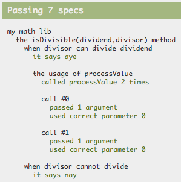

Prelude
This post assumes familiarity with Jasmine in particular and TDD with JavaScript in general. If you need a primer on the latter you can do no better than Test-Driven JavaScript Development by fellow metalhead Christian Johansen.

The book came out way back in 2010, and there has been several books written since. But I've read them all and my mind none of them comes even close to TDDJS, which not only gives you a thorough understanding for how tests work but also makes you think in a TDD way. And as an added bonus it increases your general JS fu while doing it!
All in all an impressively well-written book which has aged really well.
The premise
Anyhow! Imagine you are building a maths library consisting of an object literal with lots of methods. Say we add a method for testing whether a number is divisible by another number (that is, the result is an integer):
myMathLib.isDivisible(5,2); // false
myMathLib.isDivisible(12,3); // trueThe corresponding Jasmine test might look something like this:
describe("myMathLib",function(){
describe("the isDivisible method",function(){
describe("when numbers are divisible",function(){
it("returns true",function(){
expect(myMathLib.isDivisible(6,2)).toEqual(true);
});
});
describe("when numbers aren't divisible",function(){
it("returns false",function(){
expect(myMathLib.isDivisible(3,2)).toEqual(false);
});
});
});
});If we run these tests in a browser, Jasmine outputs this:

Jasmine makes for very readable code, and very clear output. The problem? Although easy and clear, I still find that the Jasmine code contains enough cruft that I sometimes choose not to write tests because it is too much of a hassle. This new isDivisible method I intend to add is so simple, surely I don't really need tests for that...
The literal tester
The literaltester function introduced in this blog post reduces the cruft by allowing you to define the tests in a simple JSON format. Here's the above example again, rephrased to use the JSON literal method:
literaltester("my math lib",myMathLib,{
"isDivisible(dividend,divisor)": {
"when divisor can divide dividend": {
description: "it says aye",
dividend: 48,
divisor: 8,
expected: true
},
"when divisor cannot divide": {
description: "it says nay",
dividend: 47,
divisor: 3,
expected: false
}
}
});The difference might not be earth shattering but I still find the reduced cruft to be liberating, both when it comes to readability and to actually bring yourself to write/update tests!
Under the hood literaltester will make the relevant calls to describe, it and expect, rendering an identical output:

The API in detail
The signature of the function looks like this:
literaltester(description,literal,tests,I)Here's a lowdown of the arguments:
- description: a very short description of the literal used for the toplevel
describecall - literal: the literal whose methods we want to test
- tests: a JSON object defining our tests
- I: an optional instance of ImmutableJS, more on this later
As you saw in the example, the keys in the tests literal are string representations of the signature for the methods we are testing. Here are the possible keys for the test spec:
- expected: The value we want the tested method to return
- description: An optional short description used for the
itcall. If not provided a generic string is used. - <parameter>: By using the same parameter names you put in the signature you can provide values for the various arguments
Testing context method usage
Let's say our isDivisible method is supposed to make a this.processValue call for each argument, and then use the return value for the calculation. Presumably this method takes care of parsing strings or something of the like. We can test for that by providing a context for the test:
literaltester("my math lib",myMathLib,{
"isDivisible(dividend,divisor)": {
"when divisor can divide dividend": {
description: "it says aye",
dividend: 48,
divisor: 8,
expected: true,
context: {
processValue: {
returnsarg: 0,
expectedargs: [[48],[8]]
}
}
},
"when divisor cannot divide": {
description: "it says nay",
dividend: 47,
divisor: 3,
expected: false
}
}
});Here's the generated output from Jasmine:

As you can see literaltester will generate a spy for each method in context, and test for expectedargs (if provided).
Here's the possible values for each context method. None are required, but you should only provide 1 of the first 4:
- returns: A value that the spy will return when called.
- returnsarg: An index used to
return arguments[index] - returnseries: An array of values where the first call will return index 0, then index 1, etc
- method: A function to be used as spy, where you can return whatever you want
- expectedargs: An array of arrays of expected arguments
Since it is rather common to expect context methods return something that was initially passed to the method we are testing, I made a syntax to allow pointing to those parameters by using "@<parametername>". In other words the context above could be defined like this:
{
processValue: {
returnsarg: 0,
expectedargs: [["@dividend"],["@divisor"]]
}
}Testing functional libraries using ImmutableJS
As you saw previously you can provide an ImmutableJS instance to literaltester as an optional fourth argument. If you do, all array and object parameters, expected return values and spy return values are converted using I.fromJS.
Here's a super short primer if this is all nonsense:
- Mutation makes for complex code and should be avoided
- If no mutation occurs, all we need to test is return value and context method calls (which incidentally is why
literaltesteronly does these two things) - Avoiding mutation in JS is sometimes hard as it means copying objects etc. ImmutableJS helps with this!
Source code
Here's the full source code for literaltester. It is a bit crude as it uses Sinon instead of Jasmine's internal spy API, but I just like Sinon's API so much better! The code also depends on Underscore/Lodash which is a bit cheap, but what the heck.
function tester(description,lib,methodtests,I){
describe(description,function(){
_.each(methodtests,function(tests,signature){
describe("the "+signature+" method",function(){
var methodname = signature.split("(")[0],
arglist = signature.split("(")[1].replace(/\)$/,"").split(",");
_.each(tests,function(test,testdesc){
var givenargs = _.reduce(_.keys(test),function(mem,arg){
mem["@"+arg] = test[arg];
return mem;
},{});
describe(testdesc,function(){
var result, method;
beforeEach(function(){
method = lib[methodname];
_.each(test.context||{},function(stubdef,stubname){
sinon.stub(lib,stubname,stubdef.method || (function(){
var callcount = 0;
return function(){
var ret = stubdef.returnseries ? stubdef.returnseries[callcount]
: stubdef.returnsarg !== undefined ? arguments[stubdef.returnsarg]
: test[stubdef.returns]||stubdef.returns;
callcount++;
return I ? I.fromJS(ret) : ret;
};
})());
});
result = method.apply(lib,arglist.map(function(param){
return I ? I.fromJS(test[param]) : test[param];
}));
});
it(test.description || "it returns the expected value",function(){
expect(result && result.toJS ? result.toJS() : result).toEqual(test.expected);
});
_.each(test.context||{},function(stubdef,stubname){
if (stubdef.expectedargs){
describe("the usage of "+stubname,function(){
var len = stubdef.expectedargs.length;
it("called "+stubname+" "+len+" time"+(len>1?'s':''),function(){
expect(lib[stubname].callCount).toEqual(len);
});
_.each(stubdef.expectedargs,function(args,n){
describe("call #"+n,function(){
it("passed "+args.length+" argument"+(args.length>1?'s':''),function(){
expect((lib[stubname].getCall(n)||{args:[]}).args.length).toEqual(args.length);
});
_.each(args,function(arg,a){
it("used correct value for parameter #"+a,function(){
var usedargs = (lib[stubname].getCall(n)||{args:[]}).args;
expect((I?I.List(usedargs).toJS():usedargs)[a]).toEqual(givenargs[arg]||arg);
});
});
});
});
});
}
});
afterEach(function(){
_.each(test.context||{},function(stubdef,stubname){
lib[stubname].restore();
});
});
});
});
});
});
});
}Wrapping up
Even though the win isn't super big, I've found that the threshold for adding to the JSON test definition is lower than that for having to add in another nest of describe, it and equal calls. And, in my book, everything that takes away friction from writing tests is a big win!